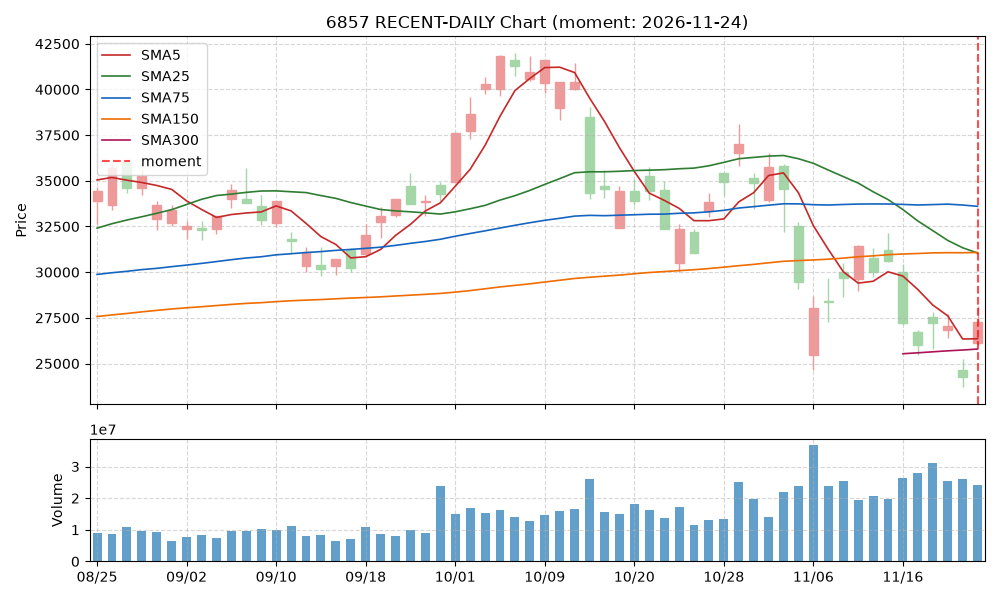

6857 アドバンテスト
1. 概要＆チャート
方向: 買い
日時: 2026-11-24 00:00:00+00:00
価格: 26500.0



2. 当時の状況
日足
| SMA | 値 | 傾き | 300との乖離率 |
|---|---|---|---|
| 5 | 26342.0 | -4.6% | 2.3% |
| 25 | 31336.0 | -1.3% | 21.7% |
| 75 | 33673.5 | -0.1% | 30.8% |
| 150 | 31062.5 | -0.0% | 20.7% |
| 300 | 25739.6 | 0.2% | 0.0% |
終値の乖離率（SMA300 との）: -5.8%
15分足
| SMA | 値 | 傾き | 300との乖離率 |
|---|---|---|---|
| 5 | 24298.0 | -0.0% | -15.7% |
| 25 | 24539.8 | -0.4% | -14.8% |
| 75 | 26014.9 | -0.1% | -9.7% |
| 150 | 27395.7 | -0.2% | -4.9% |
| 300 | 28818.7 | -0.1% | 0.0% |
終値の乖離率（SMA300 との）: -15.8%
3. 判断
- 記憶 2026-11-24 00:00:00+00:00 24000前後のラインで過去2度サポートされたのを期待。前日と合わせると大きな下ひげになる。15分足75MAにサポートされて前回高値32000を試すと見ている
4. 反省
判定: —